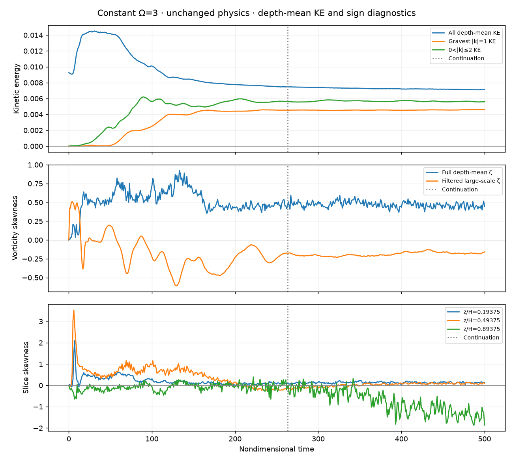

Completed on Unity · constant rotation · t=0–500
The longer run retains a mixed-sign, roughly dipolar large-scale pattern; it has not become a single anticyclonic LSV. A compact positive (cyclonic) core remains visible alongside a broader negative region. The upper slice develops strongly negative vorticity skewness, but its coherent positive core survives: a negative third moment of the full field is not a reversal of that vortex. Large-scale energy is nearly stationary over the continuation.
← Gallery landing page · Earlier Ω=1.5 and Ω=3 results
Top: ζ/f, positive = cyclonic (counterclockwise for positive f). Bottom: absolute passive-tracer concentration. Columns: z/H=0.19375, 0.49375, 0.89375. All 501 integer-time frames, 10 frames/s. Time is nondimensional, not Earth days. No changes to Ω, heating, cap, boundaries or dissipation during the continuation.
At t=500, the gravest modes contain 64.9% of density-weighted depth-mean kinetic energy. Total depth-mean kinetic energy is 77.1% of its initial value. These measures quantify large-scale occupancy; they do not measure an inverse energy flux or establish a unique coherent vortex.

The dotted line marks the restart at t=263.067; Ω remains 3 on both sides. Positive skewness means a stronger positive tail, not necessarily one persistent cyclonic vortex. Filtering retains horizontal modes 0<|k|≤2 in box-mode units.
| Time window | Depth mean ζ skew | Filtered ζ skew | Lower slice | Middle slice | Upper slice |
|---|---|---|---|---|---|
| 213-263 | 0.457 | -0.187 | 0.085 | -0.161 | -0.054 |
| 300-350 | 0.496 | -0.212 | 0.140 | -0.021 | -0.295 |
| 400-450 | 0.468 | -0.155 | 0.130 | 0.088 | -1.090 |
| 450-500 | 0.452 | -0.175 | 0.128 | 0.094 | -1.369 |
Windows are descriptive time averages from a single realization, not independent samples or ensemble uncertainty estimates.
The manually written first restart sample at t=263.06682088232816 preceded refresh of derived velocity and temperature fields. That diagnostic and its movie frame are excluded; raw data are unchanged. The cumulative continuation budget is rebased at the first valid post-step sample, t=263.5. The intervening interval is not assigned an energy defect. The prior CPU comparison showed identical evolved prognostic fields between continuation and original implementations.
The final target and checkpoint were reached. Maximum relative mass error over the joined record is 4.4e-16; spectral energy agrees with logged depth-mean energy to 8.1e-10 relative error. The full movie decoded successfully on Unity. These checks are not a resolution-convergence claim.
Dry compressible convection, 256×256×80 cells, periodic 4×4×1 box, impermeable stress-free top and bottom, full rotation vector at 67.5°N, fixed Ω=3. Original mixed-sign large eddies have velocity RMS 0.136. The run includes imposed bottom heating and the existing upper cooling/cap treatment. No β or imposed shear.
Fixed symmetric asinh vorticity scales (width 0.02 in ζ/f) cover every frame at each depth. Absolute tracer concentration uses an asinh mapping centered at 0.1, width 0.01, and the full range across all frames and depths. No per-frame rescaling or clipping. Earlier movies are preserved.
Analysis, scales and verification · Mode and skewness histories · Analysis/rendering source